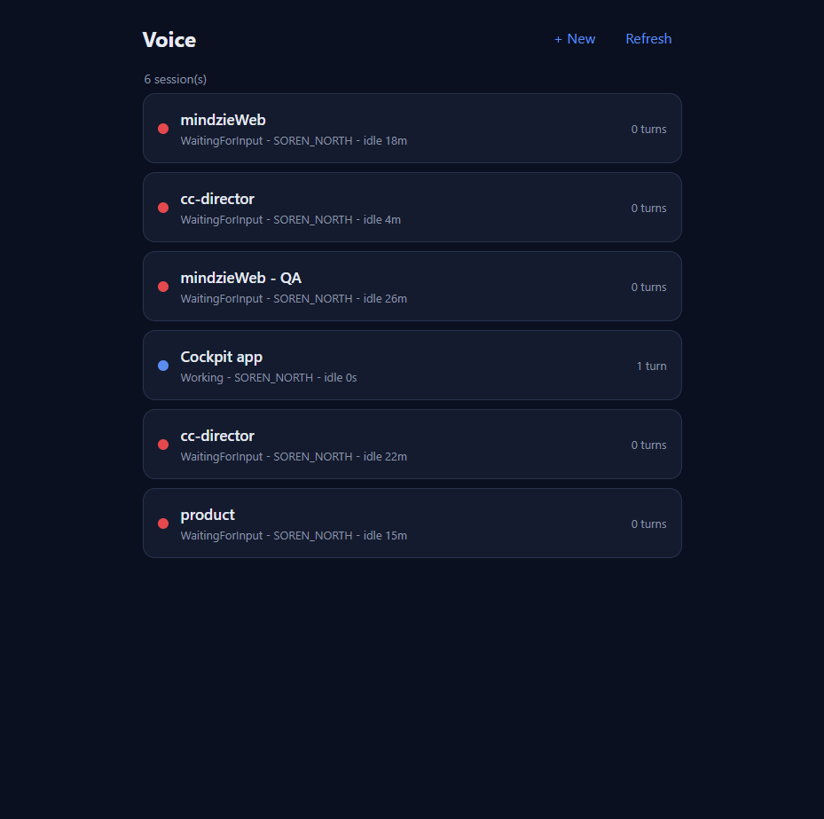
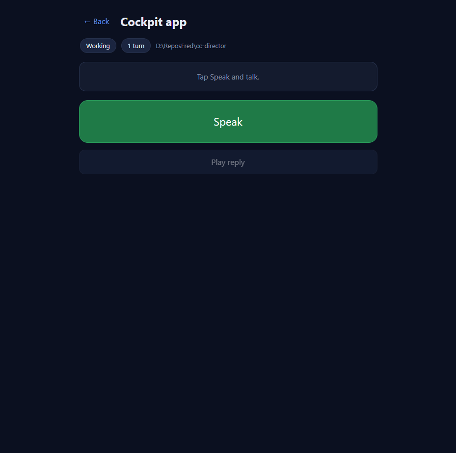

Developer Agent proof - CenCon Development Method - cc-director. Branch feat/422-voice-turncount (stacked on feat/421-voice-newsession).
The mobile-first /voice page now shows the session's completed voice-turn count both on each list row and in the open session header.
GET /sessions/{id}/voice-turns (the Gateway's durable voice-turn archive, token-gated the same as the rest of the page). The count is response.turns.length. No new backend - no Gateway / ControlApi change.src/CcDirector.Cockpit/wwwroot/pages/voice/voice.js - fetchTurnCount(), turnLabel(), per-row async fill in renderSessions(), header fill in openSession().src/CcDirector.Cockpit/wwwroot/pages/voice/index.html - <span id="session-turns"> chip in the session header.src/CcDirector.Cockpit/wwwroot/pages/voice/voice.css - .s-turns row style (reuses the existing --muted token; no hard-coded colors).| Criterion | Expected | Actual (observed) | Result |
|---|---|---|---|
Each /voice row shows a turn count |
"N turns" on every row | All 6 rows show a count; "Cockpit app" = 1 turn, others 0 turns (see list screenshot) | PASS |
| The open session header shows the same count | Same "N turns" | Header for "Cockpit app" shows a 1 turn pill beside the Working state (see header screenshot) | PASS |
| Count comes from an existing endpoint, no new backend | /sessions/{id}/voice-turns length |
Uses GET /sessions/{id}/voice-turns; zero C# / endpoint changes |
PASS |
| Count matches the session's actual turns | Match the live archive | Live Gateway returns 1 voice turn for session 18e2a901 ("Cockpit app"); UI shows "1 turn" - exact match |
PASS |
Each row carries a right-aligned turn count. "Cockpit app" shows 1 turn (singular handled correctly); all others show "0 turns".

Opening the "Cockpit app" session shows a 1 turn pill in the header meta row, matching the list and the live data.

GET http://127.0.0.1:7878/sessions/18e2a901-4351-49c0-b0ff-209aff6903a6/voice-turns (Bearer token) returned turns.length == 1. The rendered "1 turn" on both the row and the header therefore matches the session's actual voice turns.
The /voice page is static wwwroot served by the Cockpit, which injects the Gateway token at __GATEWAY_TOKEN__ and front-doors the page's same-origin /sessions/** calls. proof_server.py (in this folder) reproduces exactly that: it serves the MODIFIED pages/voice/ files with the real token injected and proxies the page's /sessions/** calls to the live Gateway on 7878. The page was then driven in a real browser; the screenshots above are that page rendering against live Gateway data.
No drift. Frontend-only change to the Cockpit voice page. No new endpoints, no architecture or security-posture change; no docs/cencon/ update required.
dotnet build cc-director.sln -> Build succeeded. 0 Warning(s), 0 Error(s).
I believe this is finished.